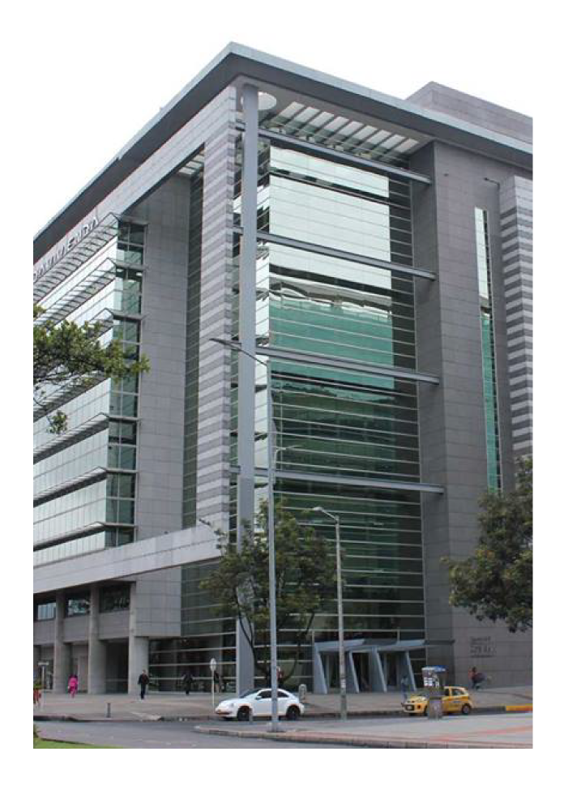

Somos Y&G Consultores,
el aliado para tomar sus mejores decisiones gerenciales.
Asesoramos para crear un mejor ecosistema empresarial y financiero para los negocios.
Y&G Consultores nace en 1994 y a ha estado operando y haciendo parte del mercado de la asesoría y la consultoría de empresas de los diferentes sectores económicos del país desde el año 1985.
Durante esta trayectoria Y&G se ha comprometido con brindar los mejores servicios en los ámbitos contables, fiscales, tributarios y legales, asumiendo un gran compromiso tanto con sus clientes como con el país.
Y&G se ha consolidado bajo altos estándares de calidad y servicio, y ha crecido junto con su gran equipo humano, profesionales expertos en las áreas contables, económicas y jurídicas, logrando un excelente posicionamiento en la industria contable y de los negocios.
Misión
Asesorar a empresas de distintas industrias en temas contables, fiscales, tributarios y legales para mejorar y potencializar sus decisiones financieras y gerenciales mediante un gran equipo profesional e infraestructura tecnológica, lo cual permite agregar valor a nuestros clientes a través de soluciones innovadoras y de alta calidad.
VisiónPara el año 2025 ser una de las cinco firmas de consultoría más acertada, reconocida y recomendada, caracterizada por su alta calidad, credibilidad y compromiso con el ecosistema empresarial y del país.
Nuestros Valores
Queremos que cada una de nuestras acciones esté ejecutada bajo los siguientes valores:
ÉTICAActuamos con responsabilidad, lealtad y honestidad, manteniendo la ética, la honradez, el profesionalismo y la confiabilidad en la conducción de sus negocios, respondiendo moral y legalmente.
LIDERAZGOSomos apasionados por los resultados que generan valor, por lo cual nos caracterizamos por ser profesionales autónomos, por tomar riesgos y por ser proactivos. Deseamos emprender nuevos desafíos y lograrlos, superando las expectativas del cliente.
TRANSPARENCIASinceridad y respeto son las bases fundamentales de nuestro trabajo. Cada situación es analizada y tratada de forma directa y estrictamente confidencial.

Por qué Y&G
En Y&G Consultores estamos seguros de que nuestros clientes contarán con una asesoría y consultoría profesional, caracterizada por los siguientes aspectos:
- Talento humano y atención personalizada
- Experiencia, trayectoria y know how
- Metodología ágil de trabajo
- Recursos tecnológicos
- Proyecciones y planes futuros